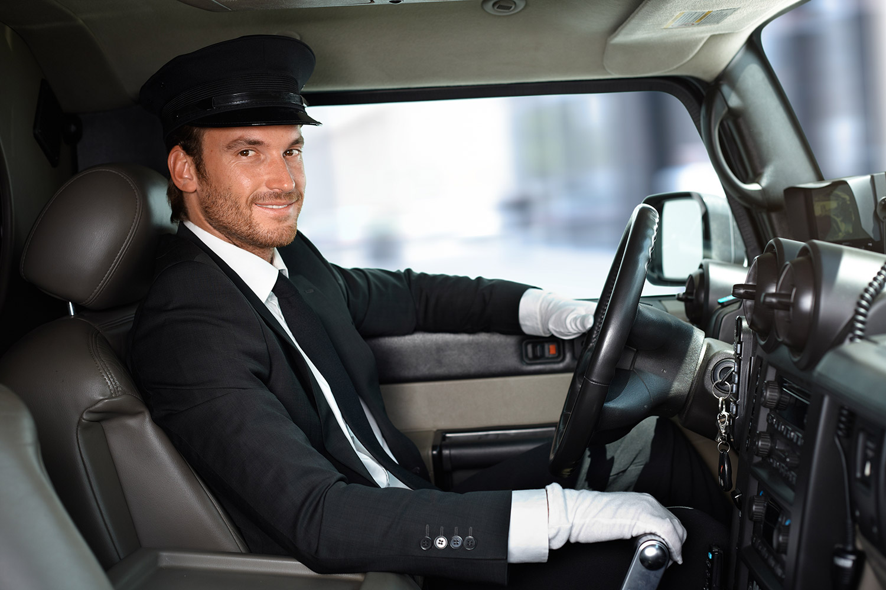

Pensions-Special
Verwöhnen Sie Ihren Lieblingsmitarbeiter mit einer erstklassigen Überraschung am letzten Arbeitstag. Für die Verabschiedung in die Pension, können Sie Ihrem Mitarbeiter eine aussergewöhnliche Freude bereiten. Lassen Sie ihn mit einer Limousine am Morgen bei ihm zu Hause abholen und zur Arbeit bringen. Das ist der beste Weg für ein letztes Dankeschön an ein geschätztes Teammitglied.
Unsere Top Chauffeure warten auf ihren Einsatz
